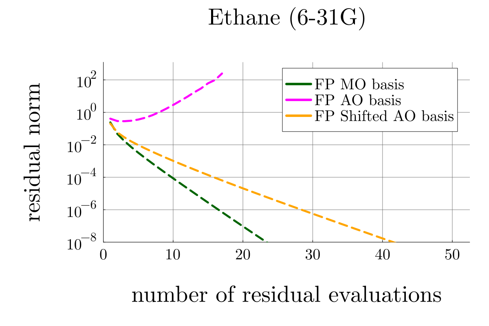
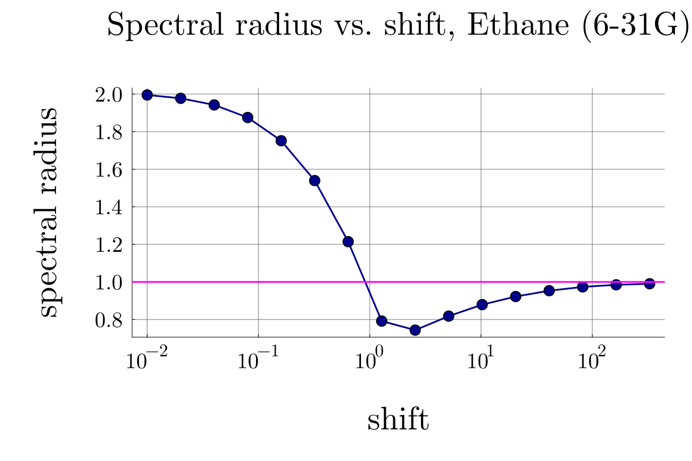
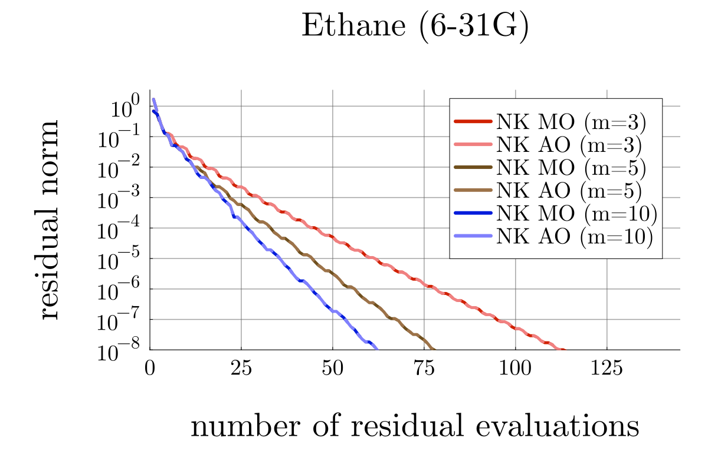

| Method | Scaling |
| CCSD | \(\mathcal{O}(N^6)\) |
| CCSD(T) | \(\mathcal{O}(N^7)\) |
| CCSDT | \(\mathcal{O}(N^8)\) |
| Gauge | Fock | ERIs | Double Amp | CC Equation |
| MO | \(f\) | \(v\) | \(t\) | \(Z(t)\) |
| AR | \(F = U^{\dagger} f U\) | \(\pi\) | \(\theta\) | \(Z(\theta)\) |
[1] Scuseria and Ayala, J. Chemical Physics. 111, (1999).
[2] Flocke and Bartlett, J. Chemical Physics. 121(22), (2004).
[3] Christoph and Frank, J. Chemical Physics. 138(3), (2013).
[1] Scuseria and Ayala, J. Chemical Physics. 111, (1999).
[4] Shavitt and Bartlett, Cambridge University Press (2009).

| Mol. | Basis |
| HF | cc-pVDZ |
| N\(_2\) | cc-pVDZ |
| H\(_2\) | cc-pVTZ |
| He\(_2\) | cc-pVTZ |
| H\(_2\)O | cc-pVTZ |
| CH\(_4\) | 6-31G |
| C\(_2\)H\(_6\) | 6-31G |
| C\(_3\)H\(_8\) | 4-31G |
| C\(_4\)H\(_{10}\) | 4-31G |
| C\(_5\)H\(_{12}\) | 3-21G |

[4] Shavitt and Bartlett, Cambridge University Press (2009).
[5] Chao and co-workers, Front. Chem. 8, (2020).

| Mol. | Basis | Conv. | m = 10 | |
| New. | GM. | |||
| HF | cc-pVDZ | \(\checkmark\) | 3 | 45 |
| N\(_2\) | cc-pVDZ | \(\checkmark\) | 3 | 45 |
| H\(_2\) | cc-pVTZ | \(\checkmark\) | 3 | 45 |
| He\(_2\) | cc-pVTZ | \(\checkmark\) | 3 | 45 |
| H\(_2\)O | cc-pVTZ | \(\checkmark\) | 6 | 90 |
| CH\(_4\) | 6-31G | \(\checkmark\) | 4 | 60 |
| C\(_2\)H\(_6\) | 6-31G | \(\checkmark\) | 4 | 60 |
| C\(_3\)H\(_8\) | 4-31G | \(\checkmark\) | 5 | 75 |
| C\(_4\)H\(_{10}\) | 4-31G | \(\checkmark\) | 5 | 75 |
| C\(_5\)H\(_{12}\) | 3-21G | \(\checkmark\) | 5 | 75 |
| Mol. | Basis | Conv. | m = 10 | |
| New. | GM. | |||
| HF | cc-pVDZ | \(\checkmark\) | 3 | 45 |
| N\(_2\) | cc-pVDZ | \(\checkmark\) | 3 | 45 |
| H\(_2\) | cc-pVTZ | \(\checkmark\) | 3 | 45 |
| He\(_2\) | cc-pVTZ | \(\checkmark\) | 3 | 45 |
| H\(_2\)O | cc-pVTZ | \(\checkmark\) | 6 | 90 |
| CH\(_4\) | 6-31G | \(\checkmark\) | 4 | 60 |
| C\(_2\)H\(_6\) | 6-31G | \(\checkmark\) | 4 | 60 |
| C\(_3\)H\(_8\) | 4-31G | \(\checkmark\) | 5 | 75 |
| C\(_4\)H\(_{10}\) | 4-31G | \(\checkmark\) | 5 | 75 |
| C\(_5\)H\(_{12}\) | 3-21G | \(\checkmark\) | 5 | 75 |